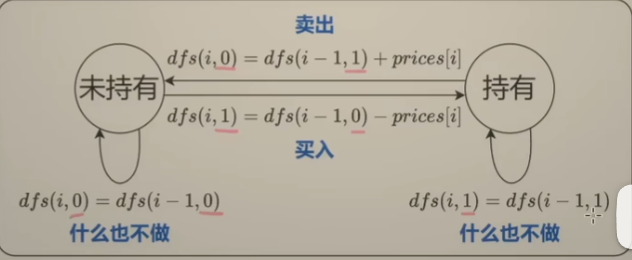

Model the problem as a finite state machine with each state representing a key decision or phase in the process. We can use numbers to represent each unique state. For example: using 0 to represent weather is sunny while using 1 represent weather is rainny.
In dynamic programming, we can use one dimision to represent the state. For example: dp[i][0] represent state weather is sunny, dp[i][1] represent the weather is rainy.
Best time to sell and buy stock At one time we can only hold one stock. So we will have two states: hold and nothold. we can use: dp[i][0] represents the max profit we can in [0..i] days, and the ending state is nothold stock, dp[i][1] represents the max profit we can in [0..i] days, and the ending state is hold stock,

dp[i][0] = max(dp[i-1][0], dp[i-1][1] + prices[i]); dp[i][1] = max(dp[i-1][1], dp[i-1][0] - prices[i]); where 0 <= i <= n-1 dp[-1][0] = 0 which means initially we do not have stock; dp[-1][1] = -inf which means initially we have stock, impossible
We need to add one dummy state in front of dp. One way is to change the indexing range of i from [0, n-1] to [1, n], but this will require the indexing of prices to be changed from i to i-1
dp[i][0] = max(dp[i-1][0], dp[i-1][1] + prices[i-1]); dp[i][1] = max(dp[i-1][1], dp[i-1][0] - prices[i-1]); where 1 <= i <= n-1 dp[0][0] = 0 which means initially we do not have stock; dp[0][1] = -inf which means initially we have stock, impossible
Another way is to change the index mapping of i from i to i + 1 on the dp table. So the indexing of prices tale does not need to be changed
dp[i+1][0] = max(dp[i][0], dp[i][1] + prices[i]); dp[i+1][1] = max(dp[i][1], dp[i][0] - prices[i]); where 0 <= i <= n-1 dp[0][0] = 0 which means initially we do not have stock; dp[0][1] = -inf which means initially we have stock, impossible
DP way to handle this problem
class Solution { public: int maxProfit(vector<int>& prices) { int n = prices.size(); vector<int> dp(n+1, vector<int>(2)); dp[0][0] = 0; dp[0][1] = INT_MIN; for(int i=1; i<=n; i++) { dp[i][0] = max(dp[i-1][0], dp[i-1][1] + prices[i-1]); dp[i][1] = max(dp[i-1][1], dp[i-1][0] - prices[i-1]); } return dp[n][0]; } };
Another idea is sold the stock on ext day as long as the stock increases the next day. If decreases next day, sold it today. So it will become add all the incrrements in the prices array
class Solution { public: int maxProfit(vector<int>& prices) { int profit = 0; for(int i=0; i<prices.size()-1; i++) { if(prices[i+1] > prices[i]) { proft += prices[i+1] - prices[i]; } } } };
In this problem, introduced another aspect to consider, the number of transactions we can made is at most k. So in the dp, we also need to introduce another dimision to count the number of transaction times
dp[i][j][0] means given prices[0..i] and max transactions j, how much max profit we can gain without holding stock dp[i][j][1] means ... hold the stock Some aspects to consider: 1. If we don't do anything yesterday, the state will remain as it is and no transction will be conducted 2. we consider but and sell as one transaction, so we can using one state transaction to deduct the transation count. For example if we consider buy a stock to deduct j, then sell a stock does not to deduct j dp[i][j][0] = max(dp[i-1][j][0], dp[i-1][j][1] + prices[i]) dp[i][j][1] = max(dp[i-1][j][1], dp[i-1][j-1][0] - prices[i]) dp[-1][.][0] = 0 dp[-1][.][11] = -INF dp[.][-1][.] = -INF where i in the range [0, n-1], j in the range [0, k] Currently the dimension of dp table is dp[n][k+1][2] We need to add one hidden state for dp[-1][.][.] and dp[.][-1][.] The final dimension for the dp table will be dp[n+1][k+2][2] so we can add one state for i, and change the range for j dp[i+1][j][0] = max(dp[i][j][0], dp[i][j][1] + prices[i]) dp[i+1][j][1] = max(dp[i][j][1], dp[i][j-1][0] - prices[i]) dp[0][.][0] = 0 dp[0][.][1] = -INF dp[.][0][.] = -INF where i in the range [0, n-1], j in the range [1, k+1]
From DP fucntion to code
class Solution { public: int maxProfit(vector<int>& prices) { int n = prices.size(); int k = 2; vector<vector<vector<long>>> dp(n+1, vector<vector<long>>(k+2, vector<long>(2, -10e10))); // dp[0][j][0] = 0, where j >= 1 for(int j=1; j<=k+1; j++) { dp[0][j][0] = 0; } for(int i=0; i<n; i++) { for(int j=1; j<=k+1; j++) { dp[i+1][j][0] = max(dp[i][j][0], dp[i][j-1][1] + prices[i]); dp[i+1][j][1] = max(dp[i][j][1], dp[i][j][0] - prices[i]); } } // not hold stock must be greater than hold stock // have more transaction oppportunity must be greater than have less opportunity // so return dp[n][k+1][0] return dp[n][k+1][0]; } };
Another idear is split the 2 transactions into first and second transaction. The first transactions happens at [0…i] while the second one happens in [i+1 … n-1]. We can use prefix sum idea to create an array firsttran[i], which gives the max profit can gain using the prices[0..i] while another array secondtran[i], which gives the max profit can gain using the prices[i..n-1]. We can using the curmin / curmax ideas in 121. Best Time to Buy and Sell Stock to calculate the two array easily
The same idea as Best Time to Buy and Sell Stock III above, istead k = 2, k can be any number else